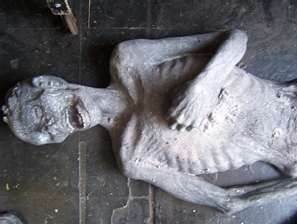

ئەسسالامۇ ئەلەيكۇم مۆھتىرەم تورداش، بلوگىمىزغا خۇش كەپسىز، قۇتلۇق قەدەملىرىڭىزگە مەرھابا!
 ئۆلۈكلەرنىڭ تېرىكلەرنى يېنىغا تارتىشى...
ئۆلۈكلەرنىڭ تېرىكلەرنى يېنىغا تارتىشى...
ئاپتورى:Birzat ۋاقتى:2012-10-09

ئۆلدى دېگەن گۇمان بىلەن يەرلىكىدە قويۇپ قىلىش، كىيىن تېرىكلەرنىڭ چۈشى بۇزۇلۇپ قەۋرىنى ئاچسا كىپەنلىرىنى يىرتىپ ، توپىلارنى تاتىلاپ دېگۈدەك ھالەتتە تۇرۇپتۇ دەيدىغان گەپلەرمۇ ئانچە مۇنچە بولۇپ تۇرىدۇ. لىكىن گۆردىكى ئادەم راستىنلا ئۆلگەن ياكى خاتا كۆمۈپ تاشلانغان بولسۇن، ئۇنىڭ سېرتتىكى تېرىك ئادەملەرگە تەسىر قىلالىشى، چۈشىگە كىرىپ بىئارام قىلىشى نېمە سەۋەپتىن بولىشى مومكىن؟ ... ئۆلگەن ئادەم بىلەن تېرىكلەرنىڭ رېشتىنى باغلاپ تۇرىدىغان بىرەر يوشۇرۇن سىر بارمۇ؟ بۇ ھەقتە كۆز قاراشلارنى كۆرۈپ باقماقچى بولسىڭىز تەپسىلاتىغا نەزەر سالغايسىز!
خەتكۈش: ئۆلۈك
يايمىكەشلەر سۈيدۈكتە تۇخۇم پىشۇرۇپ ساتماقتا
ئاپتورى:Birzat ۋاقتى:2011-03-13
نۇرغۇن دوڭياڭلىقلارنىڭ نەزىرىدە، ئوغۇل بالىنىڭ سۈيدۈكىدە پىشۇرۇلغان تۇخۇم ئەتىيازلىق ئوزۇقلۇق تولۇقلاشتىكى ئەڭ ياخشى تاللاش ئىكەن. ئوغۇل بالا تۇخۇمى ساتىدىغانلار بۇ خىل تۇخۇمنى يېسەڭ ئەتىياز پەسلىدە قىينالمايسەن، يازدا ئىسسىق ئۆتۈپ قالمايدۇ دەيدىكەن.
« ئوغۇل بالا تۇخۇمى دوڭياڭدا ناھايىتى ئۇزۇن تارىخقا ئىگە بولۇپ، ئىلگىرى تۇرمۇش شارائىتى ياخشى بولمىغاچقا، ئەمگەك قىلغاندا قۇۋۋەت تولۇقلايدىغان پەقەت تۇخۇملا بار ئىكەن. سۈيدۈكتىكى چۆكمە ماددىلار بىر مەزگىل ئۆتكەندىن كېيىن كىرىستاللىنىپ چىقىدىكەن، بۇ خىل چۆكمە بىر خىل جوڭيى دورىسى ئىكەن، ئىسسىقنى ياندۇرۇش، قان توختىتىش » رولى بار ئىكەن. دوڭياڭ جوڭيى دوختۇرخانىسىنىڭ ئېچكى بۆلىمىدىن ۋۇ يۈنخۇا ئوغۇل بالا تۇخۇمىنى موشۇنداق چۈشەندۈرگەن. ئەمما ئۇ ھەممە ئادەملەرنىڭ ئوغۇل بالا تۇخۇمى يېيىشكە ماس كەلمەيدىغانلىقىنى، ئادەمنىڭ تەن ساپاسىغا قاراش كېرەكلىكىنى تەكىتلىگەن.
جىنخۇا(金华) شەھىرىنىڭ مەركىزىي دوختۇرخانىسى بۆرەك كېسەللىكلىرى بۆلىمىنىڭ مۇدىرى خۇاڭ ئەپەندىنىڭ قارىشىچە...
ﺑﻪﺩﯨﻨﯩﻤﯩﺰﺩﻩ ﺑﯩﺰﻧﻰ ﻛﯧﺴﻪﻟﻠﯩﻚ ﺑﺎﻛﺘﯧﺮﯨﻴﻪﻟﯩﺮﯨﺪﯨﻦ ﺳﺎﻗﻼﻳﺪﯨﻐﺎﻥ ﺑﯩﺮ ﺋﺎﺭﻣﯩﻴﻪﻧﯩﯔ
ئاپتورى:Birzat ۋاقتى:2010-12-02

ﺑﯩﺰ ﺋﻮﻟﺘﯘﺭﻏﺎﻥ ﺟﺎﻳﻠﯩﺮﯨﻤﯩﺰﺩﺍ، ﺳﯜﻣﯜﺭﮔﻪﻥ ﮬﺎﯞﺍﻻﺭﺩﺍ ﯞﻩ ﺗﯘﺗﻘﺎﻥ ﺑﺎﺭﻟﯩﻖ ﻧﻪﺭﺳﯩﻠﻪﺭﺩﻩ ﻛﯧﺴﻪﻟﻠﯩﻚ ﺑﺎﻛﺘﯧﺮﯨﻴﻪﻟﯩﺮﻯ ﺑﺎﺭ، ﻟﯧﻜﯩﻦ ﺑﯩﺰ ﺋﯘﻻﺭﻧﻰ ﻛﯚﺭﻩﻟﻤﻪﻳﻤﯩﺰ . ﻛﯧﺴﻪﻟﻠﯩﻚ ﺑﺎﻛﺘﯧﺮﯨﻴﻪﻟﯩﺮﻯ ﯞﻩ ﯞﯨﺮﯗﺳﻼﺭ ﺋﯩﻨﺴﺎﻧﻼﺭﻧﯩﯔ ﻛﯧﺴﻪﻝ ﺑﻮﻟﯘﺷﯩﻐﺎ ﺳﻪﯞﻩﺑﭽﻰ ﺑﻮﻟﺪﯨﻐﺎﻥ ﻧﺎﮬﺎﻳﯩﺘﻰ ﻛﯩﭽﯩﻚ ﺟﺎﻧﻠﯩﻘﻼﺭﺩﯗﺭ. ﺋﯘﻻﺭ ﺑﯩﺰﻧﯩﯔ ﻛﯧﺴﻪﻝ ﺑﯘﻟﯩﺸﯩﻤﯩﺰﻏﺎ ﯞﻩ ﻣﺎﺩﺍﺭﯨﻤﯩﺰﺩﯨﻦ ﻛﻪﺗﻜﯜﺯﯨﯟﯨﺘﯩﺸﮕﻪ ﺳﻪﯞﻩﺑﭽﻰ ﺑﻮﻟﺴﯩﻤﯘ ﻟﯧﻜﯩﻦ ﺑﯩﺰ ﺋﯘﻻﺭﻧﻰ ﻛﯚﺭﻩﻟﻤﻪﻳﻤﯩﺰ .
ﻳﻪﻧﻪ ﺑﺎﺷﻘﺎ ﺑﯩﺰ ﻛﯚﺭﻩﻟﻤﻪﻳﺪﯨﻐﺎﻥ ﻛﯩﭽﯩﻚ ﺟﺎﻧﻠﯩﻘﻼﺭ ﺑﻮﻟﯘﭖ . ﺋﯘﻻﺭ ﺑﯩﺰﻧﯩﯔ ﺋﯩﭽﯩﻤﯩﺰﺩﻩ ﺗﯘﺭﯗﭖ ﺑﯩﺮ ﺋﺎﺭﻣﯩﻴﻪ ﺗﻪﺷﻜﯩﻠﻠﻪﭖ ﺑﯩﺰﻧﻰ ﻛﯧﺴﻪﻟﻠﯩﻚ ﺑﺎﻛﺘﯧﺮﯨﻴﯩﺴﻰ ﯞﻩ ﯞﯨﺮﯗﺱ ﻗﺎﺗﺎﺭﻟﯩﻖ ﺩﯛﺷﻤﻪﻧﻠﻪﺭﺩﯨﻦ ﻗﻮﻏﺪﺍﻳﺪﯗ. ﺑﯘ ﺋﺎﺭﻣﯩﻴﻪ ﺋﯧﻤﻮﻧﯩﺖ ﺳﯩﺴﺘﯧﻤﯩﺴﻰ ﺩﻩﭖ ﺋﺎﺗﯩﻠﯩﺪﯗ.
ﯞﯦﺮﻭﺳﻼﺭ ﺑﻪﺩﯨﻨﯩﻤﯩﺰﮔﻪ ﻛﯩﺮﮔﻪﻥ ﯞﺍﻗﯩﺘﺘﺎ ﺑﯩﺰﻧﯩﯔ ﻗﺎﻥ ﺋﯩﺸﭽﯩﻠﯩﺮﯨﻤﯩﺰ ﺧﯘﺩﺩﻯ ﺑﯩﺮ ﺗﻪﺟﺮﯨﺒﯩﺨﺎﻧﯩﻼﺭﻏﺎ ﺋﻮﺧﺸﺎﭖ ﻗﺎﻟﯩﺪﯗ. ﺋﯘﻻﺭ ﺩﻩﺭﮬﺎﻝ ﺩﯛﺷﻤﻪﻧﻠﻪﺭ ﺑﯩﻠﻪﻥ ﺋﯘﺭﯗﺷﯘﺵ ﺋﯜﭼﯜﻥ ﺋﺎﻻﮬﯩﺪﻩ ﻣﺎﺩﺩﯨﻼﺭﻧﻰ ﺋﯩﺸﻠﻪﭖ ﭼﯩﻘﯩﺮﯨﺪﯗ ﮬﻪﻣﺪﻩ ﺩﯛﺷﻤﻪﻧﻠﻪﺭﻧﯩﯔ ﻗﯘﯞﯞﯨﺘﻰ ﺗﯚﯞﻩﻧﻠﯩﺘﯩﺪﯗ . ﺟﻪﯓ ﺑﺎﺷﻼﻧﻐﺎﻥ ﭼﺎﻏﺪﺍ ﺑﻪﺯﻯ ﯞﺍﻗﯩﺘﻼﺭﺩﺍ ﺑﯩﺰ ﺳﻪﺯﻣﻪﺳﺘﯩﻦ ﺑﻪﺩﯨﻨﯩﻤﯩﺰﺩﯨﻜﻰ ﺋﺎﺭﻣﯩﻴﻪ ﻏﺎﻟﯩﺐ ﻛﯧﻠﯩﭗ ﯞﯨﺮﯗﺱ ﯞﻩ ﻛﯧﺴﻪﻟﻠﯩﻚ ﺑﺎﻛﺘﯧﺮﯨﻴﯩﻠﻪﺭﻧﻰ ﺋﯚﻟﺘﯜﺭﯨﺪﯗ.
ﺋﺎﻟﺪﯨﻨﻰ ﺋﯧﻠﯩﺶ ﺋﻮﻛﯘﻟﯩﻨﯩﯔ (ﯞﺍﻛﺴﯩﻨﺎ) ﺋﻪﮬﻤﯩﻴﯩﺘﻰ ﺋﯩﻨﺘﺎﻳﯩﻦ ﭘﺎﻳﺪﯨﻠﯩﻖ ﺑﻮﻟﯘﭖ :
خەتكۈش: باكتېرىيە
كىلون تېخنىكىسى ھەققىدە
ئاپتورى:Birzat ۋاقتى:2010-10-07
 1997 ـ يىلى 2 ـ ئاينىڭ 27 ـ كۈنى دوكتۇر ۋېلموت باشچىلىقىدىكى ئەنگلىيە ئالىملىرى بىر قوينىڭ يەككە ھۈجەيرىسىنى شۇ قوينىڭ ئۇرۇقلانمىغان تۇخۇمى بىلەن بىرىكتۈرۈشتىن ئىبارەت كىلون تېخنىكىسى ئارقىلىق دۇنيادىكى تۇنجى كىلون قوي ـ دولىنى يېتىشتۈرۈپ چىقتى. بۇ مۇۋەپپەقىيەت ئىنسانلارنىڭ ھايۋان تېنىدىكى توقۇلما ھۈجەيرىدىن پايدىلىنىپ، ئاشۇ ھايۋانغا ئوپمۇ ئوخشاش جانلىقنى كىلونلاپ چىقىش ئارقىلىق، ئالىي دەرىجىلىك ھايۋانلارنى جىنسىسىز كۆپەيتىش ئىمكانىيىتى ياراتقانلىقىدىن دېرەك بەردى. خوش، ئەمدى بىز مەتبۇئات-ئاخبارات ۋاستىلىرىدە تولا چىلىقىپ تۇرىدىغان بۇ كىلون «clone» ھەققىدىكى چۈشەنچىلەر كۆرۈپ باقايلى:
1997 ـ يىلى 2 ـ ئاينىڭ 27 ـ كۈنى دوكتۇر ۋېلموت باشچىلىقىدىكى ئەنگلىيە ئالىملىرى بىر قوينىڭ يەككە ھۈجەيرىسىنى شۇ قوينىڭ ئۇرۇقلانمىغان تۇخۇمى بىلەن بىرىكتۈرۈشتىن ئىبارەت كىلون تېخنىكىسى ئارقىلىق دۇنيادىكى تۇنجى كىلون قوي ـ دولىنى يېتىشتۈرۈپ چىقتى. بۇ مۇۋەپپەقىيەت ئىنسانلارنىڭ ھايۋان تېنىدىكى توقۇلما ھۈجەيرىدىن پايدىلىنىپ، ئاشۇ ھايۋانغا ئوپمۇ ئوخشاش جانلىقنى كىلونلاپ چىقىش ئارقىلىق، ئالىي دەرىجىلىك ھايۋانلارنى جىنسىسىز كۆپەيتىش ئىمكانىيىتى ياراتقانلىقىدىن دېرەك بەردى. خوش، ئەمدى بىز مەتبۇئات-ئاخبارات ۋاستىلىرىدە تولا چىلىقىپ تۇرىدىغان بۇ كىلون «clone» ھەققىدىكى چۈشەنچىلەر كۆرۈپ باقايلى:
22 يىل ئىلگىرىكى دادىدىن بولغان ھازىرقى بوۋاق[ ئاجايىباتلار دۇنياسى]
ئاپتورى:Birzat ۋاقتى:2010-09-21

راك، ھەممىمىزگە تونۇشلۇق بولغان قورقۇنىچلىق بىر كىسەل بولۇپ، ھازىرقى زامان تىبببىي ئىلىمىنىڭ تەرەققىياتىغا ئەگىشىپ، بۇ كىسەلنى داۋالاشتا كۆپلىگەن ئىلگىرلەشلەر بولغان، يەنى راك كىسىلىگە گىرىپتار بولغۇچىلارنىڭ ئۆمۈرى بۇرۇنقىغا نىسبەتەن كۆپ ئۇزارغان بولسىمۇ، بىراق داۋالاشتا يەنىلا ئوپىراتسىيە قىلىش، خىمىيەلىك ۋە رادىياكتىپلىق نۇر بىلەن داۋالاشقا تايانماقتىن باشقا ئامال يوق. بولۇپمۇ بالاغەتكە يەتمىگەن كىچىك بالىلار ئارىسىدا كۆپ ئۇچىرايدىغان قان راكى قاتارلىق راك كىسەللىرىنى داۋالاشتا ئاساسەن خىمىيەلىك ۋە رادىئاكتىپلىق نۇر بىلەن داۋالاشقا توغرا كىلىدۇ. بۇ خىل داۋالاشنىڭ ئۈنىمى ياخشى بولسىمۇ، بىراق ئەكىس تەسىرى ئېغىر بولۇپ، بالاغەتكە يەتمىگەن بۇ بالىلاردا كەلگۈسىدە تۇغماسلىقنى پەيدا قىلىپ قويىدۇ. 1987-يىلى ئامىرىكىنىڭ ئالباما شىتاتىدا ئاق قان راكىغا گىرىپتار بولغان 16 ياشلىق بىر بىمار، رادىياكتىپلىق نۇر بىلەن داۋالاشنى باشلاشتىن بۇرۇن ئۆزىنىڭ ئۇرۇقىنى ئېلىپ تىز توڭلىتىش تېخنىكىسى ئارقىلىق توڭلىتىپ ساقلاپ قويغان بولۇپ، ئۇنىڭدىن 22 يىل كىيىن، يەنى 2009-يىلى، شۇ 22 يىل ئىلگىرى توڭلىتىپ ساقلاپ قويغان ئۇرۇقتىن، ئايالىنى سۇنئىي ئۇرۇقلاندۇرۇپ، ساق سالامەت بىر پەرزەنتكە ئىگە بولغان. تەپسىلاتىنى كۆرۈڭ!
تۆرەلمە غول ھۈجەيرە تەتقىقات تالاش-تارتىشى Stem Cell Cultivation
ئاپتورى:Birzat ۋاقتى:2010-08-31
تۆرەلمە غول ھۈجەيرىسى-- ئەڭ كەڭ دائىرىدە تەتقىق قىلىش يۇشۇرۇن كۈچىگە ئىگە بولغان غول ھۈجەيرە بولۇپ، بارلىق تۈرلەردىكى بەدەن ھۈجەيرىسىگە ئايرىپ چىققىلى بولىدۇ. تۆرەلمە غول ھۈجەيرىسىنىڭ ئۈنۈمى تولۇق ئېنىقلانمىغان بولسىمۇ، ئالىملار شۇنىڭغا ئىشىنىدۇكى، كۈنلەرنىڭ بىرىدە، پۈتۈنلەي يېڭىچە بولغان ھۈجەيرە ۋە توقۇلمىلارنى يېتىشتۈرۈپ چىقىپ، دىئابىت كېسەللىكى، يۈرەك كېسەللىكى، راك، پاركىنسون يىغىندا كېسەللىكى قاتارلىق كېسەللىكلەرنى داۋالاشنى يېڭى ئۇسۇللار بىلەن تەمىنلىگىلى بولىدۇ. تۆرەلمە غول ھۈجەيرە تەتقىقاتى-- تۆرەلمىگە بۇزغۇنچىلىق قىلىدىغان بولغانلىقتىن، بۇ تۈردىكى تەتقىقات-- ئامېرىكىدا ئەخلاق جەھەتتىكى بەس- مۇنازىرىلەرگە سەۋەپ بولدى.
خەتكۈش: تۆرەلمە
ﺭﺍﻙ ﻛﯧﺴﯩﻠﯩﻨﻰ ﺧﯧﻤﯩﺮ ﺑﯩﻠﻪﻥ ﺩﺍﯞﺍﻻﺵ
ئاپتورى:Birzat ۋاقتى:2010-08-09

ﻛﯜﯞﻩﻳﺘﺘﻪ ﭼﯩﻘﯩﺪﯨﻐﺎﻥ «ﺋﻪﻝ ﻣﯘﺟﺘﻪﻣﻪ» ﮊﯗﺭﻧﯩﻠﯩﻨﯩﯔ 2010 – ﻳﯩﻠﻰ 30 – ﺋﯩﻴﯘﻝ ﺳﺎﻧﯩﺪﺍ «ﻣﯩﺴﯩﺮﻟﯩﻖ ﺋﺎﻟﯩﻢ ﺭﺍﻙ ﻛﯧﺴﯩﻠﯩﻨﻰ ﺧﯧﻤﯩﺮ ﺑﯩﻠﻪﻥ ﺩﺍﯞﺍﻻﺵ ﺋﯘﺳﯘﻟﯩﻨﻰ ﺋﯩﺠﺎﺩ ﻗﯩﻠﺪﻯ» ﺩﯦﮕﻪﻥ ﺗﯧﻤﯩﺪﺍ ﺑﯩﺮ ﻣﺎﻗﺎﻟﻪ ﺋﯧﻠﺎﻥ ﻗﯩﻠﯩﻨﻐﺎﻥ ﺑﻮﻟﯘﭖ، ﻣﺎﻗﺎﻟﯩﺪﻩ ﻣﯘﻧﺪﺍﻕ ﺩﻩﭖ ﻳﯧﺰﯨﻠﻐﺎﻥ:« ﺋﺎﻣﯧﺮﯨﻜﯩﺪﺍ ﻳﺎﺷﺎﻳﺪﯨﻐﺎﻥ ﻣﯩﺴﯩﺮﻟﯩﻖ ﺋﺎﻟﯩﻢ ﻣﻪﻣﺪﯗﮪ ﻏﻪﻧﯩﻢ ﻳﯩﮕﯩﺮﻣﻪ ﻳﯩﻠﻠﯩﻖ ﺟﺎﭘﺎﻟﯩﻖ ﺋﯩﺰﺩﯨﻨﯩﺸﺘﯩﻦ ﻛﯧﻴﯩﻦ، ﺋﺎﺩﻩﺗﺘﯩﻜﻰ ﺧﯧﻤﯩﺮ ﺋﺎﺭﻗﯩﻠﯩﻖ ﺭﺍﻙ ﻛﯧﺴﯩﻠﯩﻨﻰ ﺩﺍﯞﺍﻻﺵ ﺋﯘﺳﯘﻟﯩﻨﻰ ﺋﯩﺠﺎﺩ ﻗﯩﻠﯩﭗ ﭼﯩﻘﺘﻰ. ﭘﺮﻭﻓﯧﺴﺴﻮﺭ ﻣﻪﻣﺪﯗﮪ ﻏﻪﻧﯩﻢ ﺋﺎﯞﯞﺍﻝ ﺭﺍﻙ ﻳﺎﺭﯨﺴﯩﻨﯩﯔ ﻣﯩﻜﺮﻭﺑﻠﯩﺮﯨﻨﯩﯔ ﺧﯧﻤﯩﺮﻧﻰ ﺷﻮﺭﺍﭖ ﻳﯧﻴﯩﺶ ﺋﺎﺭﻗﯩﻠﯩﻖ ﺋﯚﻟﯩﺪﯨﻐﺎﻧﻠﯩﻘﯩﻨﻰ ﻣﯘﻻﮪﯩﺰﻩ ﻗﯩﻠﯩﭗ ﭼﯩﻘﯩﭗ، ﺋﺎﻧﺪﯨﻦ ﺋﯘﻧﻰ ﺗﻪﺟﺮﯨﺒﻪ ﻗﯩﻠﯩﺸﻘﺎ ﻛﯩﺮﯨﺸﻜﻪﻥ
تۆرەلمىنىڭ بالياتقۇدىكى ھەيران قالارلىق فوتو سۈرەتلىرى
ئاپتورى:Birzat ۋاقتى:2010-08-09
 1965-يىلى، ئامېرىكا "تۇرمۇش" ژورنىلى شىۋىتسارىيىلىك فوتوگراف رۇنات.نېلسون تارتقان يتىلىۋاتقان ھامىلىنىڭ سۆرىتىنى ئېلان قىلىپ، بىر مەھەل قاتتىق غۇلغۇلا-قوزغىغان. نەچچە كۈن ئىچىدىلا، ھامىلىنىڭ يېتىلىش سۆرەتلىرىنىڭ مۇكەممەل باسما نۇسخىسى نەشىر قىلىنىپ 8 مىلىيۇن نۇسخا سېتىلغان. گەرچە 40 نەچچە يىل ئۆتۈپ كەتكەن بولىسمۇ، بۇ رەسىملەر يەنىلا كىشىلەرنى ھاياجانغا سالىدۇ.
1965-يىلى، ئامېرىكا "تۇرمۇش" ژورنىلى شىۋىتسارىيىلىك فوتوگراف رۇنات.نېلسون تارتقان يتىلىۋاتقان ھامىلىنىڭ سۆرىتىنى ئېلان قىلىپ، بىر مەھەل قاتتىق غۇلغۇلا-قوزغىغان. نەچچە كۈن ئىچىدىلا، ھامىلىنىڭ يېتىلىش سۆرەتلىرىنىڭ مۇكەممەل باسما نۇسخىسى نەشىر قىلىنىپ 8 مىلىيۇن نۇسخا سېتىلغان. گەرچە 40 نەچچە يىل ئۆتۈپ كەتكەن بولىسمۇ، بۇ رەسىملەر يەنىلا كىشىلەرنى ھاياجانغا سالىدۇ.
خەتكۈش: تۆرەلمە
يېقىندىكى ئاجايىباتلاردىن تەرمىلەر (1)
ئاپتورى:Birzat ۋاقتى:2010-07-30

دۇنيا دېگەن كەڭرى، جاھاندا بىر كۈندە تۈمەن خىل ئىشلار يۈز بىرىپ تۇرىدىكەن. بىز بۇلارنى بىلىپ ئۈلگۈرۈپ بولالمايدىكەنمىز. ئۇچۇر-ئاخبارات ۋاستىلىرىدن قىزىقىپ ئولتۇرۇپ كۆرگەن ھەيران قالارلىق ئاجايىپ ئىشلار بىر مەزگىلدىن كىيىن ئېسىمىزدىن كۆتۈرلۈپ كېتىدىكەن. ئەنگىلىيەدىكى بىرسى مۈشۈكىنىڭ بۇرنى ئاستىنى گېتلىرنىڭكىدەك بوياپ بوينىغا ناتسىستلارنىڭ مىدالىنى ئىسىپ گېتلىرغا ئوخشايدىغان مۈشۈك دەپ تور بېتىدە ئىلان قىلىپ زور غولغۇلا قوزغىۋېتىپتۇ. نۇرغۇن ئادەم ئۆزىنىڭ كۆزقاراشلىرىنى قالدۇرۇپ، «بۇ مۈشۈك ھەقىقەتەن گېتلىرغا ئوخشايدىكەن» دېگەنمىش. بىراق يەنە ئاز ساندىكى كىشىلەر گېتلىرنى ياقتۇرمىغانلىقتىن، «گەرچە مەن مۈشۈكنى ياخشى كۆرسەممۇ، بىراق ئوماق مۈشۈكنى گېتلىرغا ئوخشاتقىنى بەك مەنىسىز بولۇپتۇ» دەپتىمىش. بەزى ئامېرىكىلىق تورداشلار يەنە «بۇ مۈشۈك گېتلىرغا ئەمەس، چارلىس چاپلىنغا بەكرەك ئوخشايدىكەن» دېگەنمىش.
لاسۋىگاستا بىر ناتونۇش قىمارۋاز پەيدا بولۇپ بىر كېچىدىلا بۇ قىمار شەھىرىدىكى قىمارۋازلارنىڭ يانچۇقىنى قۇرۇقداپ قويغانمىش. بۇ گۇينىڭ نوچى يېرى شۇ يەردىكى ئۇ ئۇتقان پۇللىرىدىن نۇرغۇنىنى كەمبەغەللەرگە ئۈلەشتۈرۈپ بەرگەن دەيدۇ. قىمارۋاز دېگەننىغۇ بەك پەسەندە، پەيتى كىلىپ قالسا خوتۇنىنىمۇ ئۇتتۇرۋېتىدۇ دەپ ئاڭلايدىغان. ماۋۇسى خىلى مەرت ئىكەن. ئالدىنقى يىلى بىرازىليەدە قىمار بەك قىزىپ كەتسە نەچچە كۈن مىدىرلىماي ئوينايدىغان قىمارۋازلار ھاجەتكە چىقماي ئاستىغا زاكا قىستۇرۇپ قىمار ئوينىغان دەپ كەچلىك گېزىتتە خەۋەر بىرىپتىكەن. قالغان تەپسىلاتىنى تەپسىلاتتىن كۆرۈڭ!
خەتكۈش: ئاجايىباتلار
ئاي شارىنىڭ ھەممىلا يېرىدە سۇ بار ئىكەن[ئاجايىباتلار دۇنياسى]
ئاپتورى:Birzat ۋاقتى:2010-07-24
سەئۇدىيدىكى ئايال جىن چاپلىشىۋالغان يېگىت [ ئاجايىباتلار دۇنياسى]
ئاپتورى:Birzat ۋاقتى:2010-07-23

ئىككى باشلىق موزاي دۇنياغا كەلدى[ ئاجايىباتلار دۇنياسى]
ئاپتورى:Birzat ۋاقتى:2010-07-21

بۇ ھايۋانلارنى بىلەمسىز؟
ئاپتورى:Birzat ۋاقتى:2010-07-18
Caracal بولسا تۈرۈكچە سۆز بولۇپ قارا قۇلاق دېگەن مەنىدە. ئۇنىڭ سىلىندىر شەكىللىك ئۇزۇن قۇلاقلىرى ئۈستىدىكى قارا تۈكلىرى چوقچىيىپ تۇرىدۇ. قارا قۇلاق شىمالىي ئافرىقىنىڭ كۆپلىگەن جايلىرى، ئەرەب يىرىم ئارىلى ۋە ئاسىيانىڭ غەربىي جەنۇبىدىن تېپىلىدۇ.
كېچىسى ھەركەت قىلىدىغان بۇ كىچىك مۈشۈكچاقلار ھايۋاناتلار دۇنياسىدا كۆزگە چىلىقمايدۇ.

خەتكۈش: ئىنگىلىزچە مەشىق تەرجىمىلىرىم
دۇنيادىكى داڭلىق شارقىراتمىلار Famous Waterfalls of the World
ئاپتورى:Birzat ۋاقتى:2010-07-03

مەندەك سەيلى - ساياھەتكە ئامىراق ئەمما تولىمۇ ھورۇن ئادەمگە دۇنيانى كۆرۈشتە ھازىرچە كومپيۇتېر ئالدىدا ئولتۇرۇپ گۈزەل مەنزىرە، مەشھۇر جايلارنى كۆرۈش ئاران نىسىپ بولغان چېغىۋا. يالغاندىن بولسىمۇ توردا سەيلى-ساياھەت قىلغان بولۇپ ئانچە-مۇنچە ئېنگىلىزچە ئۈگۈنۈپ قالىدىغان گەپكەن. ھاۋا ئىسسىپ كەتكەندە ئادەمگە بەك ياقىدىغىنى سالقىن مەنزىرە ، بولۇپمۇ ئېگىز تاغ چوققىسىدىن ھەيۋەت بىلەن چۈشۈۋاتقان شارقىراتما بولسا كېرەك. شەخسەن ماڭا شۇنداق ھوزۇرلۇق تۇيۇلىدۇ. دۇنيا سىر-ھېكمەتلەرگە تولغان. پۇرسەت بولسا دۇنيانى ساياھەت قىلغۇلۇق، كۆزىمىزنى ئىچىپ مېڭىمىزنى سەگىتىپ قويغۇلۇق ئىكەن. مەن بۈگۈن سالقىندىغاچ ئولتۇرۇپ ۋېكپىدىيە قامۇسى ھەم لۇغەتلەردىن پايدىلىنىپ يۈرۈپ چالا-بۇلا ئېنگىلىزچەم بىلەن دۇنيادىكى داڭلىق شارقىراتمىلارنى بىرەر قۇر كۆرۈپ چىقتىم. مەشھۇر يەر-جاي ناملىرى، داڭلىق شارقىراتما ئىسىملىرىنىڭ تولۇق ئېنگىلىزچە ئاتىلىشىنىمۇ خاتىرلەپ قويدۇم. تونۇشتۇرۇشلارنى قىسقىچە تەرجىمە قىلىپ قويدۇم. تەپسىلاتىنى كۆرمەكچى بولغانلار مەن تەمىنلىگەن ئېنگىلىزچە تولۇق نامى بىلەن ئىزدەش تور بەتلىرىدىن ئىزدەپ كۆرۈپ باققايسىز. خۇدا نېسىپ قىلسا كىيىنچە ئەمەلىي كۆرۈشكە نىسىپ بولغاندا ئەسقاتار.
_________________ بىرزات
خەتكۈش: Famous Waterfalls ئىنگىلىزچە مەشىق تەرجىمىلىرىم
ئۇيغۇرلارنىڭ قەدىمقى مېڭە ئوپېراتسىيىسى [جاھاندىكى ئاجايىباتلار]
ئاپتورى:Birzat ۋاقتى:2010-06-22
پېرۇدا «پاقا شەربىتى» كىشىلەرنىڭ ياختۇرىدىغان ئىچىملىكى
ئاپتورى:Birzat ۋاقتى:2010-06-20

ئالمىشىپ كەتكەن بوۋاقنى ئايرىشنىڭ ئۇسۇلى [جاھاندىكى ئاجايىباتلار]
ئاپتورى:Birzat ۋاقتى:2010-06-20
كۈنلەرنىڭ بىرىدە باش مەسئۇل دوختۇر يوق بولغان كۈنى ئاياللار تۇغۇت بۆلىمىگە بىرلا ۋاقىتتا تولغىقى پىشىپ تۇغىتى قىستاپ قالغان ئىككى ئايال ئىلىپ كىلىنىپتۇ. بىر مەھەل داۋام قىلغان جىددىيلىك ئاخىرلىشىپ
ئۇ ئىككى ئايال يەڭگىپ بولغاندىن كېيىن سىستىرالارنىڭ بىخەستلىكىدىن يېڭىدىن دۇنياغا كەلگەن بۆۋاقلار ئالمىشىپ كېتىپتۇ.
دوختۇرلارنىڭ ئېيتىشىچە بۆۋاقنىڭ بىرى ئوغۇل , يەنە بىرى قىز ئىكەن. لىكىن ئۇ ئامرىكىلىق بىلەن مىسىرلىق ئىككىلى دۇختۇر ئوغۇل كىمنىڭ پەرزەنتى ؟ قىزكىمنىڭ پەرزەنتى , بۇ بوۋاقلارنىڭ ئانىلىرى كىم ئۇنىمۇ بىلەلمەي ھاڭ-تاڭ بولۇپ تۇرۇپ قاپتۇ. (قان تېپىنى تەكشۈرۈپمۇ تاپالمىغان بولىشى مومكىن. ئەسلى مەزمۇندا بۇ ھەقتە چۈشەنچە يوق ئىكەن)
ئاخىرى ئۇ ئامرىكىلىق دوختۇر مىسىرلىق مەسلەكدىشىدىن سەن بىز مۇسۇلمانلارنىڭ كىتابىدا ھەممە نەرسىلەر ئوچۇق , ئايدىڭلاشتۇرۇپ بىرىلگەن دېگەن ئېدىڭ، قېنى ئەمدى بۇ ئىككى بۆۋاقنىڭ قايسى ئايالنىڭ ئۆز پەرزەنتى ئېكەنلىگىنى كۆرسىتىپ بەرگىن دەپتۇ.
قىزىل كرېست بەلگىسىنىڭ بارلىققا كېلىشى [دۇنيادىكى مەشھۇر ۋەقەلەر]
ئاپتورى:Birzat ۋاقتى:2010-06-15
بۇ قىزىل رەڭلىك كرېست بەلگىسى ئىسلام دۇنياسىغا كىرگەندە ئاۋارىچىلىققا يۇلۇقتى. 1876-يىلى، تۈركىيە ئوسمان ئېمپىرىيىسى بىلەن روسىيە ئۇرۇشقاندا، تۈركىيە ھۆكۈمىتى خىرىستىئان دىنىنىڭ سىمىۋۇلى بولغان كرېست بەلگىسىنىڭ ئىسلام دىنىدىكى تۈركىيە ئەسكەرلىرى ۋە خەلقى ئۈچۈن يات ئىكەنلىكى ۋە قۇبۇل قىلىنمايدىغانلىقىنى ئېيتىپ، ئىسلام ئەللىرى قىزىل ھىلال ئاي بەلگىسى ئىشلىتىش تەكلىۋى بەردى ۋە تۇنجى بۇلۇپ قىزىل ھىلال ئاي بەلگىسىنى ئىشلەتتى.
« خاتىرجەم ئۆلۈش » مەسىلىسى [دۇنيادىكى مەشھۇر ۋەقەلەر]
ئاپتورى:Birzat ۋاقتى:2010-06-11

ئازاپسىز ئۆلۈمنى قوللىغۇچىلار ئازاپسىز ئۆلۈم ئۈچۈن چۇقۇم تۇۋەندىكى شەرتلەرنى ھازىرلانغان بولۇش كېرەك دەپ قارايدۇ .
1 .بىمار ھازىرقى زامان تىببى پەن تېخنىكىسى بويىچە داۋاسىز كېسەلگە گىرىپتار بۇلۇپ قالغان بولسا شۇنداقلا ھاياتىنىڭ ئاخىرقى باسقۇچىغا بېرىپ قالغان بولسا;
2 . بىمار چىدىغۇسىز كېسەل ئازابىغا دۇچار بولغان بولسا;
3 . ئازاپسىز ئۆلۈم چۇقۇم بىمارنىڭ ئۇرۇق – تۇغقانلېرىنىڭ ، دۆلەتنىڭ ياكى جەمىيەت مەنپەئەتى ئۈچۈن ئەمەس بەلكى بىمارنىڭ ئۆلۈشتىن بۇرۇنقى ئازابىنى يەڭگىللىتىشنى مەقسەت قىلغان بولۇشى كېرەك .
4 . چۇقۇم بىمارنىڭ كاللىسى سەگەك ۋاقتىدا ئەستايىدىل چۈشەندۈرۈش ھەمدە بىمارنىڭ ماقۇللۇقىنى ئېلىش كېرەك .
5 . قائىدە بويىچە چۇقۇم تېببى خادىملار ئىجرا قېلىش كېرەك .
6 . چۇقۇم جەمىيەت ئىتراپ قىلغان ئۇسۇل بىلەن ئىجرا قىلىنىشى كېرەك .
ياپونىيە ، شىۋىتسارىيە قاتارلىق دۆلەتلەر ۋە ئامېرىكا قوشما شىتاتلېرىنىڭ قىسمەن شىتاتلېرى ئاللىبۇرۇن خاتىرجەم ئۆلۈش قانون – نىزامنامىسىنى ئېلان قىلىپ بولدى .